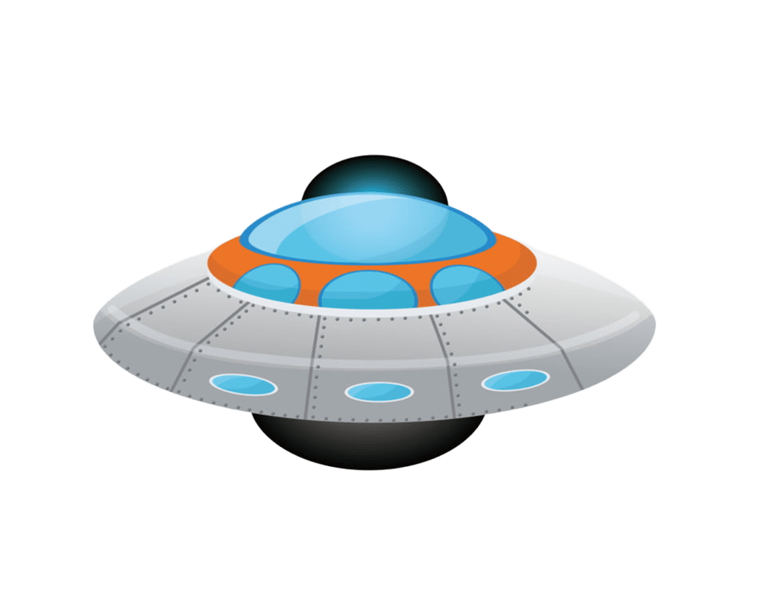

Меркурій
Найближча до Сонця планета. Найменша планета Сонячної системи. Обертається навколо Сонця за 88 земних діб. Дуже повільно обертається навколо своєї осі – одна доба триває приблизно 176 земних діб.
Атмосфера майже відсутня; вона складається з мікроскопічних кількостей гелію, натрію, кисню та інших газів.
Температурні контрасти дуже різкі:
• вдень до +430 °C,
• вночі до −180 °C.
Має багато кратерів, поверхня схожа на Місяць. Супутників немає.

Планету відвідували лише два космічні апарати. Mariner 10 пролетів повз неї у 1970-х роках і вперше передав фотографії поверхні. У 2011 році на орбіту вийшов апарат MESSENGER, який детально дослідив склад кори, рельєф, магнітне поле, наявність льоду та інші властивості. Зараз європейська місія BepiColombo летить до Меркурія і має розпочати орбітальні дослідження у 2030-х роках.
Одна з найбільш незвичайних властивостей Меркурія – його резонанс обертання. Планета робить три оберти навколо своєї осі за два оберти навколо Сонця. Інакше кажучи, сонячна доба на Меркурії (тобто час від одного сходу Сонця до наступного) триває приблизно 176 земних днів – довше, ніж його рік. Це створює дуже повільні зміни дня і ночі. Через повільне обертання і тонку атмосферу поверхня Меркурія сильно нагрівається або охолоджується.
Атмосфера Меркурія фактично не є атмосферою у звичному сенсі. Це надзвичайно розріджена екзосфера, що складається з атомів натрію, кисню, водню, гелію та калію, які безперервно здуваються сонячним вітром і одразу замінюються новими, вибитими з поверхні мікрометеоритами або сонячним випромінюванням. Через це атмосфера не може утримувати тепло, і саме тому виникають величезні температурні різниці між днем і ніччю.